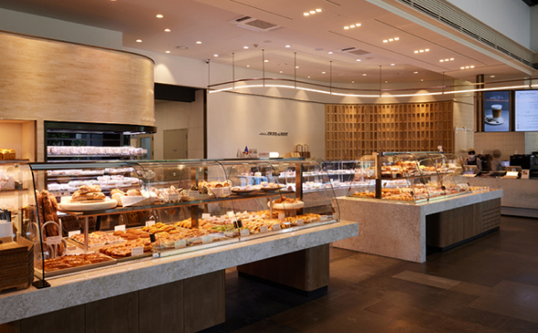
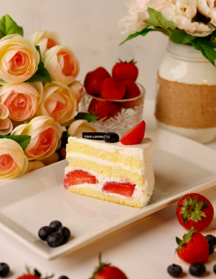
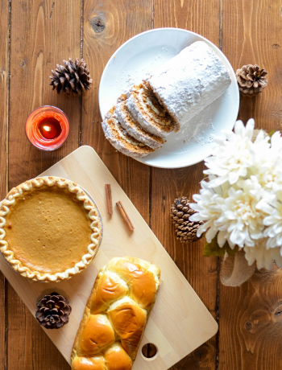

home > 브랜드 스토리 > 라뜰리에
라뜰리에

Latelier,
cozy bakery
with everyday hope
'뚜레쥬르 라뜰리에'는 뚜레쥬르의 브랜드 정신이 집약된 곳으로
재료부터 다른 건강한 베이커리로서 매일 매일 최고의 제품만을 선보입니다.
매일 매장에서 직접 반죽해 정성스럽게 만드는 베이커리와 편안하고 친근한 공간을 선사합니다.


Authentic Bakery Cafe
- 정통 베이커리 카페 라뜰리에
- 매일 매장에서 직접 반죽하여 정성스럽게 만드는 뚜레쥬르 라뜰리에는 각 제품 특성에 맞는 밀가루를 선별하여 사용하고, 천연 발효종, 프랑스 AOP 버터, 우유 생크림 등 프리미엄 원료를 엄선하여 사용한 시그니처 제품을 선보입니다. 오직 뚜레쥬르 라뜰리에에서만 즐길 수 있는 다양한 빵과 케이크, 신선한 샐러드와 샌드위치는 물론이고 라뜰리에 프리미엄 햄퍼세트까지 고급스러운 선물을 만나보세요. 벼 껍질, 굴 껍데기, 달걀 껍질 등의 소재를 업사이클링한 오브제와 푸릇푸릇한 식물로 꾸며진 친환경적인 공간을 즐겨보세요.
- 매장안내
- 서울시 중구 동호로 330
- 동대문 역사 문화공원역 2,4호선 5번출구 나와서 퇴계로 5가 사거리까지 직진 200M
- 02-6740-7930